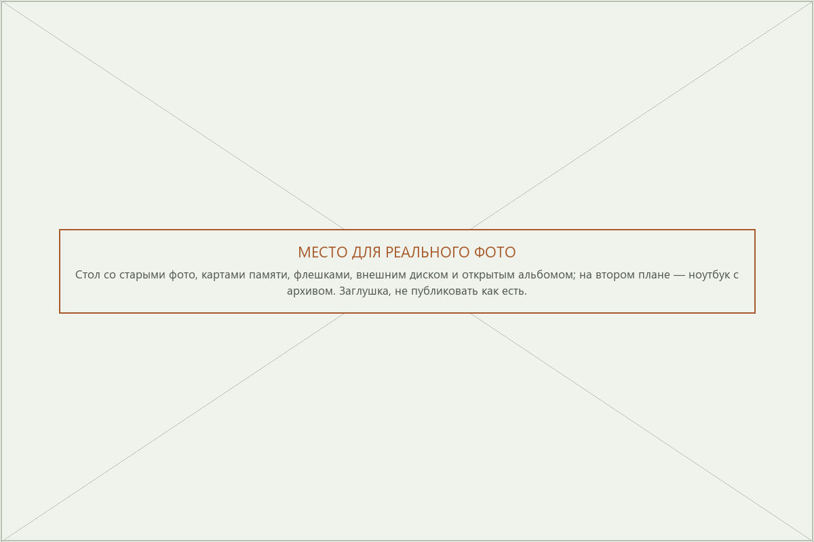
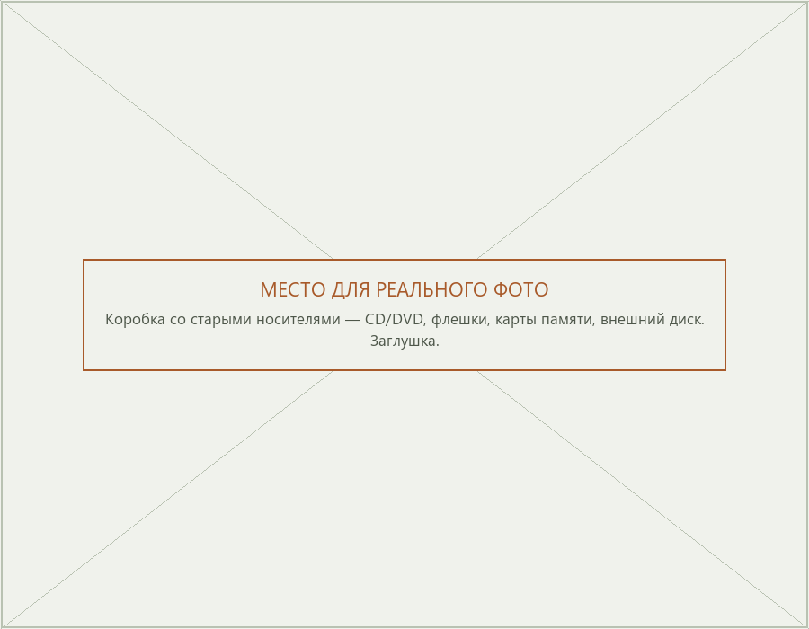
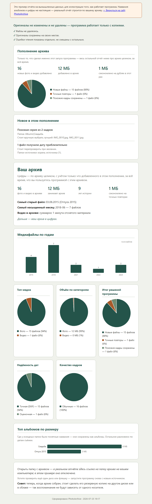
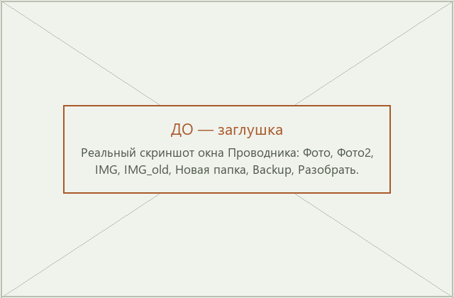
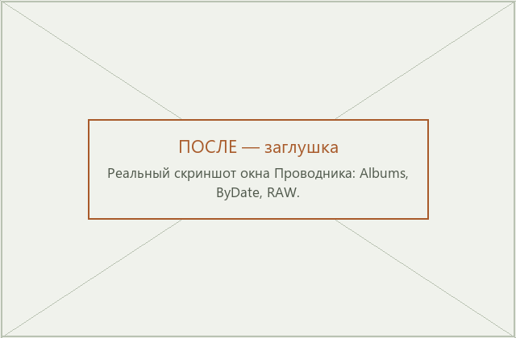
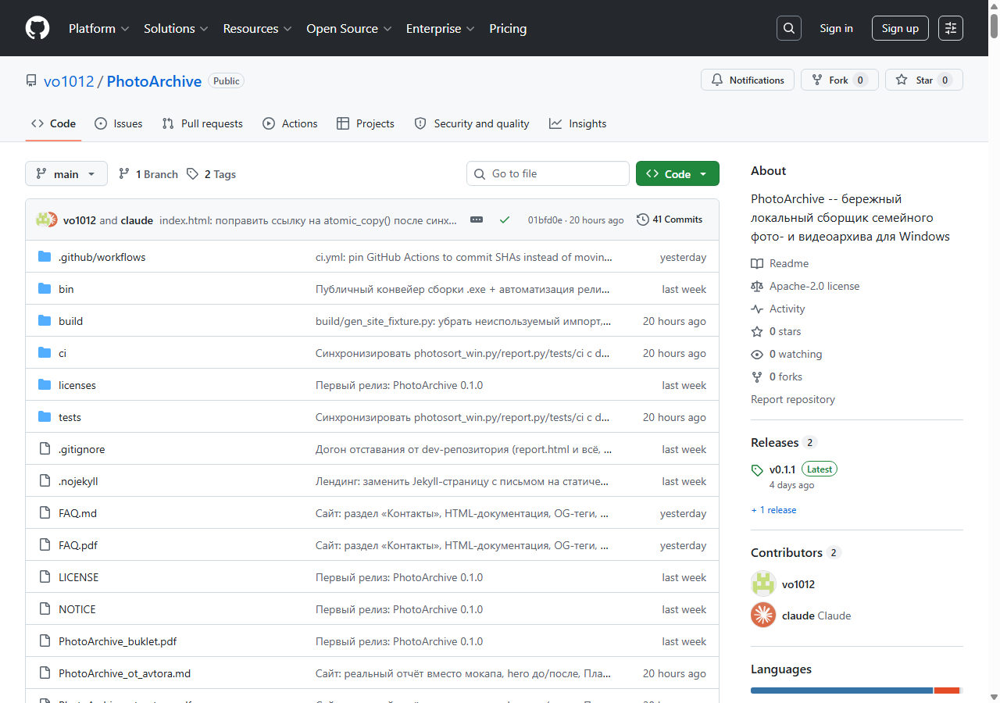

Наведите порядок в семейном фотоархиве — без риска потерять фотографии
PhotoArchive создаёт новый, аккуратный архив рядом с вашими фото — не изменяя ваши исходные файлы. Не импортирует их в собственную библиотеку. Не переносит. Не переименовывает. Не удаляет.
Сначала вы смотрите, что программа нашла. Потом — каким будет результат. И только после этого решаете, собирать архив или нет.
Первый шаг ничего не меняет и не копирует — можно просто посмотреть, что найдётся, и решить дальше уже по факту.

Если это похоже на ваш архив — вы не одиноки
Семейный фотоархив не становится меньше. Он становится всё сложнее.
Каждый год появляются новые фотографии. Меняются телефоны. Покупаются новые компьютеры. Заполняются внешние диски. Где-то остаются старые флешки. Где-то лежат карты памяти, которые «надо потом разобрать».
Со временем фотографии оказываются повсюду: старый компьютер, новый компьютер, внешний диск, флешки, карты памяти, старые zip-архивы, папки «Фото», «Фото2», «Разобрать», «Новые», «Копия»...
И однажды становится понятно, что навести порядок уже давно пора.
Но появляется другая мысль: «Лучше пока ничего не трогать...»
Не потому, что лень. Потому что страшно случайно потерять то, что невозможно восстановить.
Именно для таких архивов и создавалась PhotoArchive.

Дело не только в неудобстве. Каждое отдельное место хранения — само по себе отдельная точка риска: сломается диск, потеряется флешка — и вместе с ней часть истории семьи, которую нельзя переснять заново.
Навести порядок вручную можно. Но чем больше архив, тем сложнее это сделать
Когда фотографий несколько сотен — достаточно аккуратно разложить их по папкам самому. Когда их десятки тысяч, появляются совсем другие вопросы: где уже есть копии? какая фотография — оригинал, а какая случайный дубль? что лежит в старых zip/rar-архивах, которые давно никто не открывал? какие файлы остались без даты? что можно спокойно объединить, а что лучше оставить как есть? Именно здесь ручная работа превращается в долгий и утомительный процесс — и именно эти вопросы решает PhotoArchive.
Не верьте программе. Проверьте её.
Большинство программ для фото сразу предлагают что-то изменить: импортировать снимки в собственную библиотеку, перестроить структуру, переместить файлы, завести свою базу данных.
PhotoArchive работает иначе. Она создаёт новый архив, не трогая исходный. Ваши фотографии продолжают лежать там же, где лежали до запуска программы. При этом она умеет забирать их сразу из нескольких мест за один раз.
Исходные файлы остаются нетронутыми. Всегда.
Один архив вместо множества разрозненных папок и носителей.
Не уверены? Не спешите.
PhotoArchive специально построена так, чтобы вы могли убедиться в результате ещё до того, как будет создан новый архив. В программе три режима — не потому, что она сложная, а потому что доверие появляется постепенно, а не по чьим-то красивым словам. Каждый следующий режим имеет смысл только тогда, когда вас полностью устраивает предыдущий.
Не знаете, что вообще у вас накопилось на диске или флешке? Начните с первого режима — он ничего не тронет, только посмотрит и расскажет, что нашёл.
Уже примерно представляете, что у вас есть, но не знаете, каким получится результат? Второй режим для этого и нужен — ничего никуда не скопируется, но вы увидите, как ляжет будущий архив.
Уже точно знаете, чего хотите? Смело переходите к третьему — настоящей сборке.
Посмотреть, что найдётся
Начните именно с этого режима. Программа только исследует выбранную папку: ничего не копирует, ничего не изменяет, ничего не создаёт. После завершения вы получите подробный отчёт о состоянии своего архива — не приняв за это время ни одного решения.
Пробный запуск
Показывает, каким получится архив: сколько войдёт в альбомы, сколько — по датам, сколько повторов найдётся. Файлы по-прежнему не копируются — можно заранее увидеть результат и при желании изменить настройки, прежде чем что-либо реально произойдёт.
Создание архива
Только когда вы уверены в результате. Копирование начинается после того, как вы сами напечатали «да» для подтверждения. Не понравилось, как всё легло? Удалите созданный архив и соберите его заново с другими настройками. Новый архив создаётся для вашего удобства — исходный архив по-прежнему остаётся вашей страховкой.
По результатам любого из трёх режимов формируется подробный отчёт — простым языком и наглядными диаграммами, что нашлось и что сделано. Подробнее о том, как устроен и читается отчёт — в README.md.
Что сделать? [1] Сканирование источника (read-only) [2] Пробный прогон (dry-run, без записи) [3] Сборка архива Ваш выбор [по умолчанию 1]:
Вот и всё — программа выглядит именно так.
-
Раскладывает по альбомам — если у папки уже есть понятное имя, оно сохраняется как есть — или по дате съёмки, если понятного имени нет. Без ручной работы.
-
Определяет дату съёмки по метаданным камеры, а место (город) — по GPS-координатам, если они есть в файле; полностью офлайн, без обращения к интернету.
-
Находит точные повторы по содержимому файла, а не по имени, — не создаёт лишних копий.
-
При повторном запуске добавляет только новые файлы — старое заново не копируется.
Почему обработка занимает время?
Потому что PhotoArchive не занимается простым копированием файлов. Во время обработки программа читает метаданные, определяет дату съёмки, анализирует содержимое архива, строит будущую структуру, проверяет дубликаты и формирует подробные отчёты.
Большой семейный архив невозможно обработать за несколько секунд — файлов у типичного архива за много лет накапливаются десятки тысяч. Обычное копирование такого объёма тоже небыстрое — а здесь, вдобавок, ещё и надёжное.
Зато весь процесс прозрачен: вы всегда видите, что происходит сейчас, сколько файлов уже обработано и сколько ещё осталось.
Просматриваю уже собранный архив: 45%|██████████▍ | 8543/19096 [00:38<00:47, 224.6файл/с] Разбираю и копирую файлы — DSC_04213.MOV: всего обработано файлов: 14 302 [1:52:10, 3.1файл/с, своб.2043.5ГБ]
Дословный вид строки прогресса программы. Оценка оставшегося времени видна не на каждом этапе — на индексации уже собранного архива она есть (первая строка), а на разборе и копировании источника — только текстовый счётчик без процента (вторая строка): работа идёт, не зависла, не «думает» — именно работает.
После любого режима — подробный отчёт
Даже если вы выбрали только «Посмотреть, что найдётся».
У программы нет отдельного окна с предпросмотром фотографий — но после каждого прогона вы получаете подробный отчёт, который помогает увидеть архив целиком и понять то, что невозможно заметить, просто открывая папки вручную. Он открывается в обычном браузере, не требует специальных программ и остаётся только на этом компьютере — никуда не отправляется.
Вы узнаете:
- сколько найдено фотографий и видео;
- сколько места они занимают;
- какие годы представлены лучше всего, а где, возможно, есть пробелы;
- есть ли файлы без даты;
- какие моменты стоит проверить вручную (например, очень похожие кадры подряд);
- что именно сделала программа.
Смотреть и искать сами фото при этом можно любым удобным способом — Проводником, приложением «Фото» или любой другой программой, какой вы уже пользуетесь.

Пример на вымышленных данных. Названия альбомов и цифры не настоящие — реальный отчёт строится по вашему архиву.
Посмотреть пример отчёта → · Подробнее об отчётах →
Было → Стало
Наведение порядка — это не просто копирование файлов. Это создание структуры, в которой фотографии легко найти даже спустя годы.


Никаких специальных программ. После сборки вы продолжаете работать с обычными папками Windows.
Принципы безопасности
«Там, где возможны разные решения, программа выбирает то, что безопаснее для ваших фотографий.»
-
Никогда не удаляет исходные файлы — только копирует.
-
Если сомневается — сохраняет оба варианта, а не выбирает молча.
-
Ведёт подробный журнал каждого решения — всегда можно проверить, куда делось любое фото.
PhotoArchive
— проект с открытым исходным кодом целиком, не одна показательная строчка. Не верьте на
слово — вот код, который читает исходную папку:
SourceWalker.walk(),
photosort_win.py. Когда речь идёт о семейном архиве, возможность проверить
работу программы гораздо важнее красивых обещаний.
Чего программа намеренно не делает:
Не требует интернета
Не требует установки и учётной записи
Не собирает никакую статистику использования
Не изменяет метаданные и содержимое исходных файлов
Не облачный сервис — все файлы остаются на вашем компьютере
Не отвлекает анимациями и кнопками — либо делает ровно то, что написано на экране, либо останавливается с понятным сообщением
Ваши воспоминания не должны зависеть от одного диска или одной флешки — собранный архив проще один раз сохранить в двух местах, чем следить за десятком разрозненных копий.
Проект с открытым исходным кодом
PhotoArchive распространяется с открытым исходным кодом. Можно скачать программу, изучить, как она устроена, посмотреть историю изменений или самостоятельно собрать её из исходных текстов — никаких скрытых частей.
Когда речь идёт о семейном архиве, прозрачность — ещё один повод для доверия, а не просто красивые слова о нём.

Документация начинается ещё до первого запуска
Не обязательно читать сотни страниц, чтобы попробовать программу. Начните с того объёма информации, который нужен именно вам.
Письмо автора
Почему вообще появилась PhotoArchive и какие задачи она должна была решить. Если хотите понять философию программы — начните именно с этого документа.
Быстрый старт
Первое знакомство с программой и первый запуск — минимум времени, максимум практики.
Частые вопросы
«Изменяет ли программа мои фотографии? Нет. PhotoArchive работает только на чтение исходного архива.» Здесь же — что делать при отключении питания, как обрабатываются фото без даты и другие частые ситуации.
Полная документация
Подробное описание всех режимов, настроек, структуры архива и принципов работы.
Попробуйте. Без риска.
Не начинайте со сборки архива. Не меняйте настройки. Не принимайте поспешных решений.
Просто выберите папку с фотографиями и запустите режим «Посмотреть, что найдётся». Через несколько минут вы получите подробный отчёт о своём архиве — без копирования файлов, без изменений, без риска.
Возможно, именно после этого вы поймёте, что навести порядок не так страшно, как казалось.
Скачать
Бесплатно · Windows · Открытый исходный код
При первом запуске Windows может показать окно «Windows защитила ваш компьютер» — это стандартная реакция системы на новую программу без миллионов загрузок, не признак опасности. Программа с открытым исходным кодом (см. «Принципы» выше) — проверить его может кто угодно. Чтобы продолжить: в этом окне нажмите «Дополнительно», затем «Выполнить в любом случае».
Вопросы
Точно ли исходные фотографии не пострадают?
Да. Программа только читает файлы источника — переименовать, переместить или удалить что-либо там она не умеет технически.
Нужен ли интернет?
Нет. Вся обработка — на этом же компьютере, ничего никуда не отправляется.
Платно?
Нет, бесплатна и останется такой для всех. Донат — добровольный и ни к чему не привязан.
Нужно ли что-то устанавливать?
Нет — portable .exe, запускается сразу, без установки и учётной
записи.
Смогу ли я потом смотреть и искать фото прямо в программе?
Нет, PhotoArchive не хранит и не показывает фото сама — результат работы это обычные папки с понятными именами, открываются любым приложением, каким вы уже пользуетесь (Проводник, встроенное «Фото», любой каталогизатор).